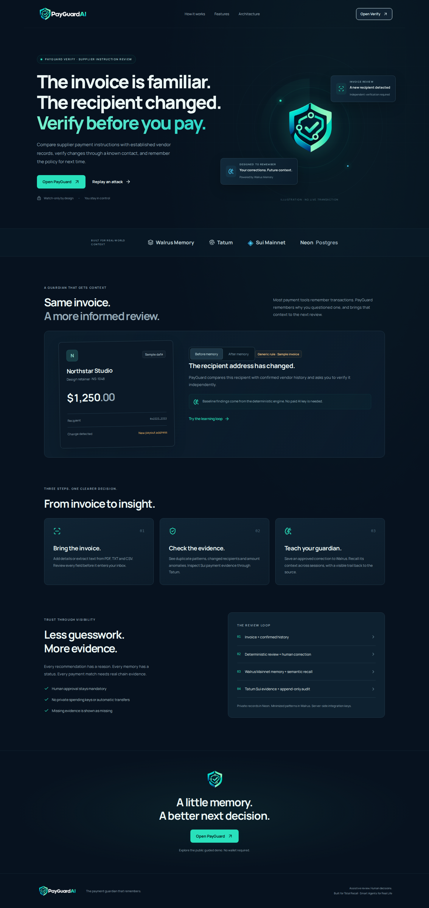

The invoice was familiar. The recipient was not.
30 confirmed Mainnet memories: proof ledger · Test results

Published engineering report · October 28, 2026. Mainnet results are measured; the public application is live at payguard-ai-henna.vercel.app.
A payment request can look routine while changing the one detail that matters: who gets paid. The FBI's business email compromise guidance describes vendor impersonation, subtle address changes and compromised correspondence. It recommends independently verifying changes using a known channel. PayGuard Verify turns that review practice into an observable workflow.
Start with a reference, not a score
The application records a vendor's established recipient, email domain and independent contact. A new instruction is compared against that reference. Changed recipients, mismatched reply-to details, urgency and instructions to skip verification become explicit findings. We do not call the resulting rule score a fraud probability. A matching email domain does not authenticate a message, and a syntactically valid wallet does not prove supplier control.
The human establishes the fact
A reviewer contacts the supplier through the previously established channel and records what happened. The attestation is bound to an instruction snapshot and vendor-profile revision. Editing either invalidates it; concurrent edits and approvals use database row locks. These records are human assertions, not claims that our app observed a phone call. No supplier payment is initiated.
Walrus remembers why
Corrections become minimized policy templates with pseudonymous references. Raw invoice documents, correspondence, contacts and detailed explanations are not sent to Walrus. The server uses the Walrus Memory delegate SDK, records an accepted job ID durably, and waits for a completed result before showing a confirmed blob. A timeout remains pending and resumes the same job.
When a later invoice is reviewed, semantic recall queries the owner's stable namespace. Returned content is untrusted until it matches the exact confirmed tenant-owned payload. The deterministic engine then applies the matching authoritative policy, with a visible citation. Memory OFF removes learned soft-policy application while retaining mandatory checks. An empty recall result produces no invented improvement.
On October 28 we confirmed all twelve distinct seeded policies on Walrus Mainnet. These are
fictional business events with real storage receipts. The first seed's job was
4d590890-db79-4329-986f-10f52d32d5c7, returning blob
pPYsV-RKCESYlutuJDdc9lj9pxV2ixSA_zMHRDr2CM4. Interrupted
writes resumed their accepted IDs; no pending job entered the confirmed count.
A new server process reviewed a later Northstar sample invoice at
2026-10-28T14:06:45.669Z. OFF retained recipient-change
warnings. ON retrieved twelve confirmed memories and applied three matching vendor policies,
moving the review from “Needs review” to “High risk / verification required.” The proof file
records the exact returned citations; this was not a local policy lookup dressed as recall.
A separate browser experiment then created a thirteenth confirmed memory, logged out, closed the first context, signed in through a new context, and reviewed a later invoice. The test passed in 56.8 seconds: the new assessment cited the exact blob written in the first session. Neither OFF nor ON bypasses the independent-verification gate. Completion and recall evidence includes all thirteen job/blob pairs.
Tatum supplies a different kind of evidence
The backend uses native Sui Mainnet gRPC through Tatum, with TLS and a server-only API key. It verifies service identity, fetches transaction effects and balance changes, resolves coin decimals, and compares exact atomic units. Gas-payer rebates are excluded from payment matching. Fiat invoices need an explicitly agreed token amount. Database uniqueness protects against digest reuse.
This chain evidence answers whether the expected address received the expected token amount. It does not answer whether the supplier authorized the instruction. Keeping those questions separate is central to the product.
Tatum identified Sui Mainnet as 35834a8a and reported
service checkpoint 339079915. We inspected the real public
digest os1iG8zow278c6hqxbuyxnvMUjzThsD8GTY8atdfzW6,
finalized in checkpoint 339078672. Its successful execution
did not prove a payment to our sample vendor: the transaction showed a SUI debit from its
sender, while the sample recipient received zero. Live coin metadata returned nine decimals.
Our reconciliation returned Mismatch against the synthetic expectation of
500000000000 atomic units.
That negative result is useful. A successful transaction pasted into a review must not become a fabricated receipt. No transfer was sent and no invoice was marked paid. Positive matching remains covered by synthetic fixtures; this article makes no claim of a real positive supplier payment. Tip discovery was intermittent, so the demo uses the actual known digest with honest provider failures.
What we tested and what remains
The automated suite covers attack replay controls, changed-recipient gates, stale human verification, parsing, reconciliation edge cases and durable memory state transitions. Provider fixtures are explicitly synthetic. Local PostgreSQL tests establish application behavior, not Neon or Mainnet connectivity. Fresh-session learning was demonstrated separately with live credentials; hosted deployment validation is recorded independently in the test ledger.
Memory is subject to retention epochs and semantic indexing delays. Deterministic patterns can miss attacks or flag legitimate requests. Our audit is append-only through the app, not immutable against a database administrator. These limits remain visible rather than hidden behind a confidence badge.
The narrow MVP deliberately uses a single active supplier reference with invoice-scoped attestations, rather than claiming a complete vendor identity system. The replay includes changed recipients, lookalike domains, compromised threads, a negative control, duplicates, legitimate exception context and the exact prompt-injection phrase from our adversarial test. New exception memories require a current independent attestation, remain invoice-scoped and expire after thirty days.
The remaining submission work is hosted application verification, a short recorded demonstration, and the required account/dashboard details. This report is published directly from the public source repository. The repository contains the application, reproducible checks and reviewed real evidence. No x402/MPP settlement or payment bonus is claimed.
Update: 30 confirmed memories and an interactive judge journey
The original thirteen records were preserved. A bounded seventeen-event expansion reached thirty confirmed Mainnet memories, with zero pending or failed jobs. A fresh live evaluation retained all baseline findings in four supplier reviews, applied zero stale or wrongly scoped rules, and added zero critical findings to one unchanged control.
Open the three-minute public judge sandbox · Measured learning quality · Mainnet service-payment implementation and gates
The judge uses the same application logic with synthetic business events and genuine recorded provider evidence. The Mainnet x402 implementation has exact native-SUI terms, spending caps and Tatum receipt checks. No service payment has settled; spending remains disabled and Slush review is pending. The Vercel app is publicly accessible. The owner will arrange the video separately.
An evaluation that exposed a real false alarm
Four genuine Walrus recalls were reused across 18 authored synthetic scenarios. The first run met 15/18 contracts and exposed three extra recipient warnings on established destinations with sparse invoice history. After anchoring the learned comparison to the established supplier reference, the repeated run met 18/18 contracts, retained every baseline finding, and added no critical warnings on four unchanged controls. Sixteen scenarios applied remembered context; only 10.9% of candidate/case combinations were applicable. These are small contract checks, not real-world fraud accuracy or a ranking precision measurement.
Inspect the full learning report and before/after evidence
A wallet account, not a supplier identity claim
Current security gate: the owner reports a Slush malicious-website warning on the production origin. Hosted wallet onboarding and new service-payment signing are paused pending review. Do not override wallet warnings. The public judge journey and owner workspace remain available. Controlled wallet fixtures do not certify physical Slush onboarding. Read the investigation and limitations.
Connect Sui Wallet creates an individual account only after a domain/browser-bound, expiring, one-time personal message is verified by the backend. Connection alone grants no access. Records and confirmed memory provenance are scoped to that account; administrator rights remain separate. Storage is operator-managed. Signing in cannot send funds or establish who owns a supplier destination.
Try the seven-step public judge journey · Wallet onboarding status · Security design and limitations
Controlled two-customer Mainnet learning proof
The original 30 memories remain intact. Two independently authenticated simulated wallet users each confirmed one sponsored Mainnet correction, logged out, signed in again, and recalled their own rule on a later synthetic invoice. Both directions denied foreign invoice and memory access. The tracked confirmed total is 32. These are real Neon/provider operations through the local app, not certification of hosted physical-wallet onboarding.
Read the two-customer proof. Slush review was submitted by the owner; the production wallet pause remains.
Verified production release
Application commit 2571cea passed the complete hosted browser suite: 14 passed, zero failed, and three intentional wallet-fixture skips while Slush review is unresolved. Owner/Neon persistence, fresh-session Walrus recall and Tatum Mainnet reads passed independently. The unit suite has 110 passing tests. The expanded payment proposal works on mobile, and human attestation waits for current instruction data.
Mainnet x402 native-SUI code and read-only production preflight are implemented. No service payment has settled. Dedicated payer/merchant setup, security clearance and exact financial approval remain required. Read the evidence and limitations.
See the instruction change, then inspect the proof
The product now introduces the review with a six-stage interactive illustration: invoice, changed recipient, detection, approval hold, human check and remembered context. Play, Pause, Replay and manual steps are available, with reduced-motion support. The illustration is synthetic; the separate Memory OFF/ON comparison uses dated genuine recall and retains the hard approval hold.
The workspace displays current server-evaluated approval holds and persisted audit events, rather than a simulated live feed. Its personal memory count is separate from the 30 owner and two controlled customer Mainnet records. A configured integration is not labeled as a successful diagnostic.
The public review-only wallet selector lets the owner reach Slush’s own Flag for review action without owner credentials. It cannot sign, register or create a session. No security clearance or service-payment settlement is claimed. Current UX and validation evidence.